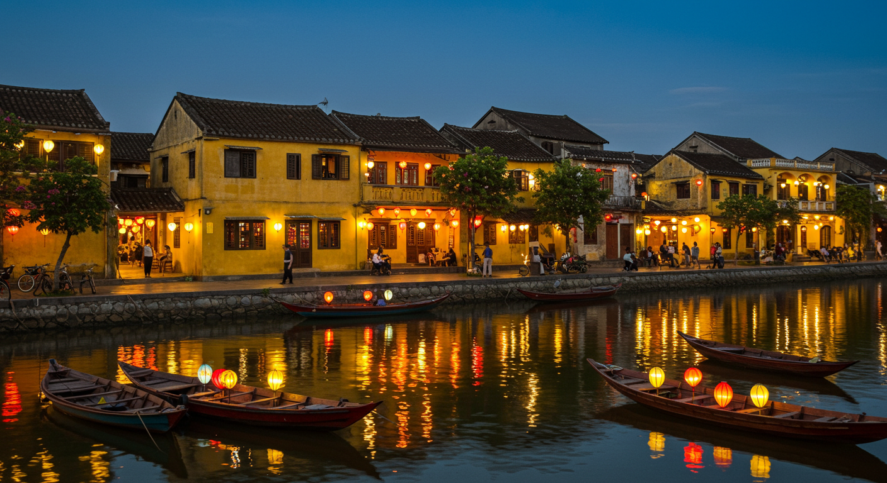

한국의 신정(양력설) 풍습
문화
한국
명절
한국의 신정(양력설) 풍습
새해의 첫날, 양력 1월 1일을 한국에서는 '신정'이라고 부릅니다. 음력 설날과 구분하기 위해 '양력설'이라고도 하는데, 오늘은 한국의 신정 풍습에 대해 알아보겠습니다.

1. 새해 첫날의 시작
해돋이 보기
많은 한국인들이 새해 첫날 일출을 보며 한 해의 소원을 빕니다. 대표적인 해돋이 명소로는: - 강원도 강릉 정동진 - 울산 간절곶 - 부산 해운대 - 제주도 성산일출봉 등이 있습니다.
새해 첫 소원 빌기
해가 뜨는 순간 두 손을 모아 새해의 소원을 비는 것이 일반적입니다. 가족의 건강, 학업 성취, 사업 번창 등 다양한 소원을 빕니다.
2. 신정 당일의 풍습
새해 첫 인사
- "새해 복 많이 받으세요"라는 인사를 나눕니다
- 가까운 친척과 친구들에게 새해 인사 전화를 합니다
- 최근에는 SNS로 새해 인사를 나누는 것이 일반화되었습니다
가족 모임
- 가족들이 모여 새해 첫 식사를 함께합니다
- 떡국을 먹는 것이 일반적이지만, 이는 음력설의 풍습이 양력설에도 이어진 것입니다
- 새해 계획과 소망을 함께 이야기합니다
3. 현대의 신정 문화
새해 계획 세우기
- 새해 결심을 하고 목표를 설정합니다
- 다이어리나 플래너를 새로 시작합니다
- 운동, 독서, 학습 등 자기계발 계획을 세웁니다
새해 첫 활동
많은 사람들이 새해 첫날에 의미 있는 활동을 하려고 합니다: - 새해 첫 운동 - 첫 영화 관람 - 첫 독서 - 첫 여행 계획 세우기
4. 공공기관과 기업의 신정 행사
새해맞이 행사
- 각 지자체별 새해맞이 타종식 개최
- 문화 공연과 축제 진행
- 불꽃놀이 행사
기업문화
- 시무식 진행
- 새해 첫 업무 시작
- 신년 계획 발표
5. 신정 연휴 즐기기
대표적인 활동
- 가족 여행
- 친구들과의 모임
- 새해 첫 쇼핑
- 영화나 공연 관람
연휴 기간 주의사항
- 귀성 차량으로 인한 교통 혼잡
- 관광지 인파
- 식당과 편의시설 운영시간 변동
신정은 음력설만큼 전통적인 풍습은 적지만, 현대적인 방식으로 새로운 한 해의 시작을 기념하는 의미 있는 날입니다. 가족, 친구들과 함께 새로운 희망과 계획을 나누는 소중한 시간이 되고 있습니다.